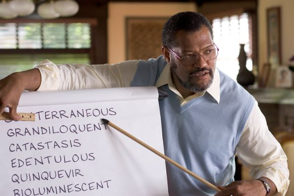
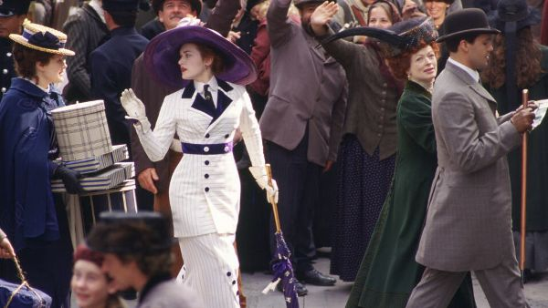
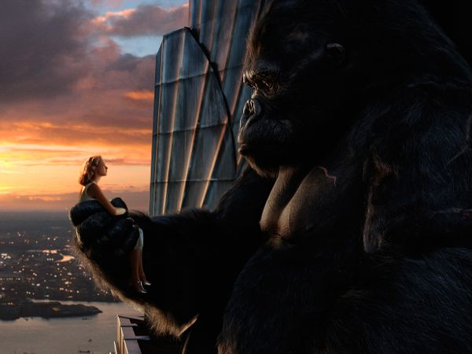
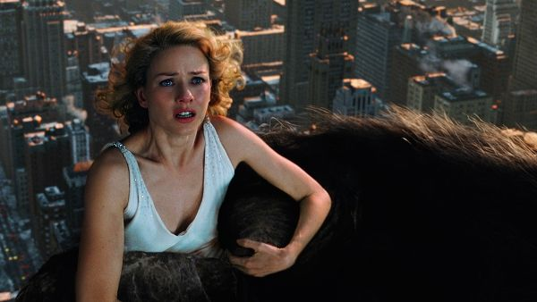
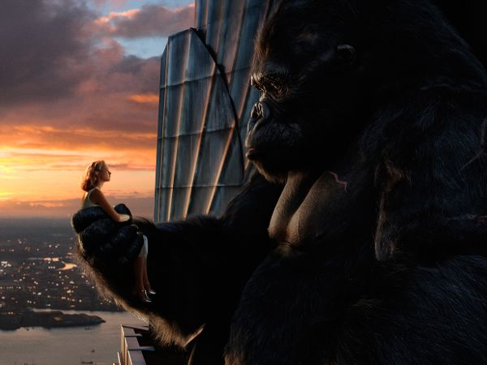
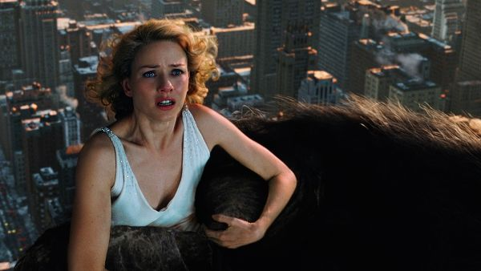
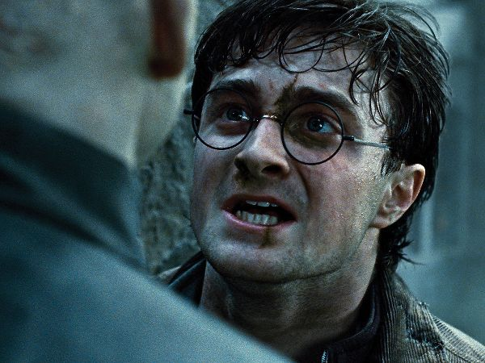

MY FAVOURITE MOVIES
- Akeelah and Bee
- GENRE:Family-friendly drama
- Apparence date:6.april 2007
- Short description:A young girl learns to believe in herself and value her intelligence in this critically-acclaimed, family-friendly drama. Akeelah Anderson (Keke Palmer) is an 11-year-old being raised by her mother, Tanya (Angela Bassett), who was left on her own after the death of her husband. While Akeelah is a very bright girl, she's hardly a star student and seems afraid of acting like a bookworm around her friends and classmates. However, Akeelah's teacher sees genuine potential in her student and encourages her to enter the school's spelling bee, convinced Akeelah has the brains and the talent to win.

- Titanic
- GENRE:Drama
- Release date:28 april 2006:
- Short description:This spectacular epic re-creates the ill-fated maiden voyage of the White Star Line's $7.5 million R.M.S Titanic and the tragic sea disaster of April 15, 1912. Running over three hours and made with the combined contributions of two major studios (20th Century-Fox, Paramount) at a cost of more than $200 million, Titanic ranked as the most expensive film in Hollywood history at the time of its release, and became the most successful. Writer-director James Cameron employed state-of-the-art digital special effects for this production, realized on a monumental scale and spanning eight decades.

- King-Kong
- GENRE:Action-adventure
- Release date:15 November 2010:
- One of the greatest adventure stories in Hollywood history gets a new interpretation in this action drama from Academy Award-winning director Peter Jackson. In the early 1930s, Carl Denham (Jack Black) is a daring filmmaker and adventurer who has gained a reputation for his pictures documenting wildlife in remote and dangerous jungle lands; despite the objections of his backers, Denham plans to film his next project aboard an ocean vessel en route to Skull Island, an uncharted island he discovered on a rare map. Correctly assuming his cast and crew would be wary of such a journey, Denham has told them they're traveling to Singapore, but before they set sail, his leading lady drops out of the project. Needing a beautiful actress willing to take a risk, Denham finds Ann Darrow (Naomi Watts), a beautiful but down-on-her-luck vaudeville performer, and offers her the role;
 

- Harry Poter
- GENRE:Magic && fantastic
- Release date:28 april 2006:
- GENRE:Drama
- Release date:28 april 2006:
- One of the greatest adventure stories in Hollywood history gets a new interpretation in this action drama from Academy Award-winning director Peter Jackson. In the early 1930s, Carl Denham (Jack Black) is a daring filmmaker and adventurer who has gained a reputation for his pictures documenting wildlife in remote and dangerous jungle lands; despite the objections of his backers, Denham plans to film his next project aboard an ocean vessel en route to Skull Island, an uncharted island he discovered on a rare map. Correctly assuming his cast and crew would be wary of such a journey, Denham has told them they're traveling to Singapore, but before they set sail, his leading lady drops out of the project. Needing a beautiful actress willing to take a risk, Denham finds Ann Darrow (Naomi Watts), a beautiful but down-on-her-luck vaudeville performer, and offers her the role;

Press HOME to open home page